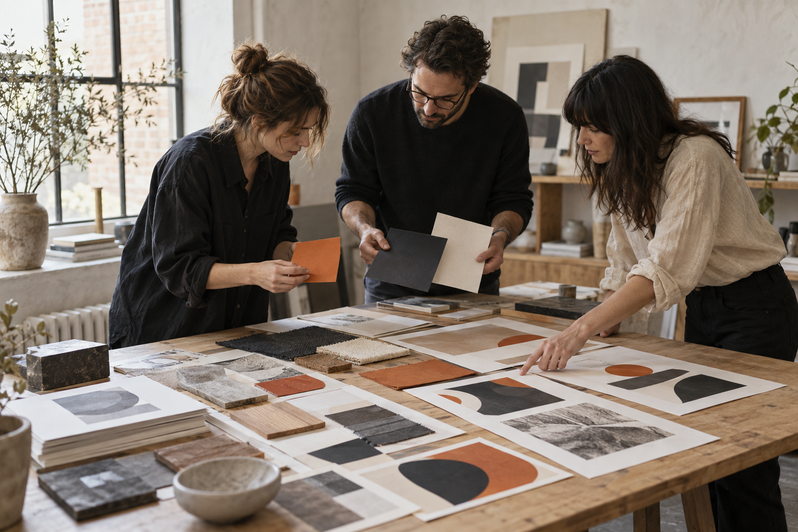
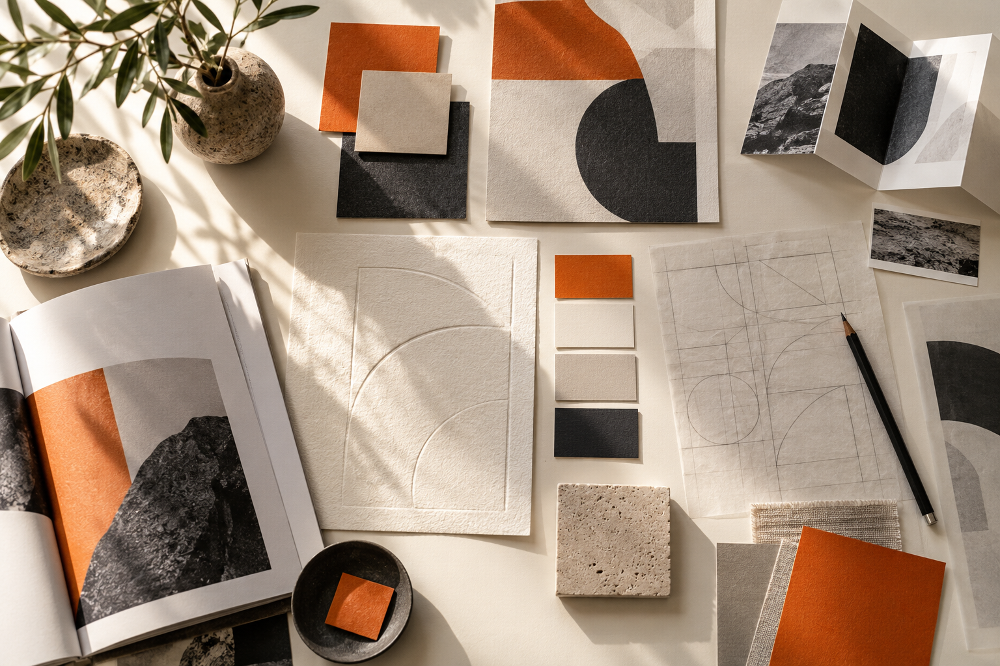
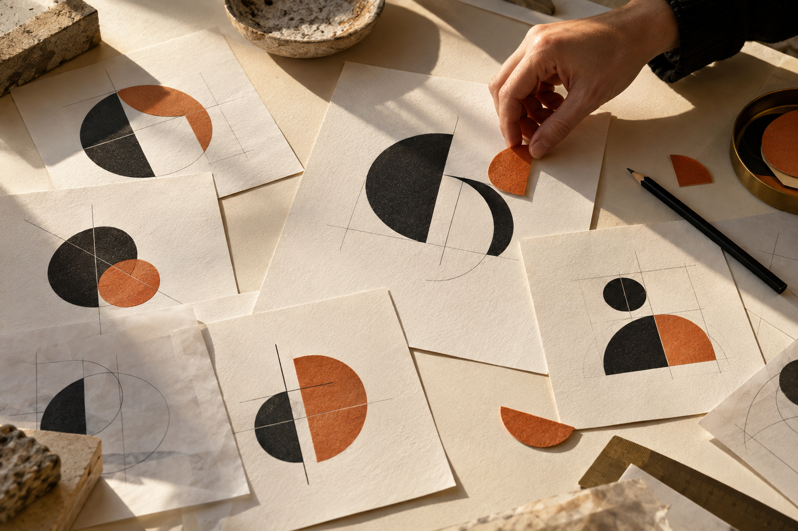
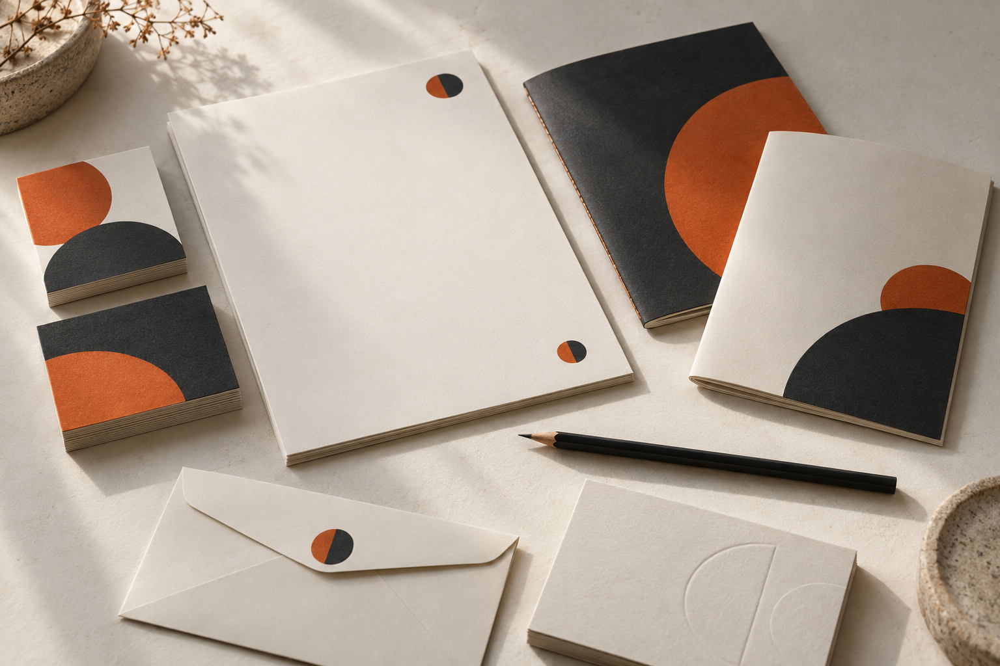
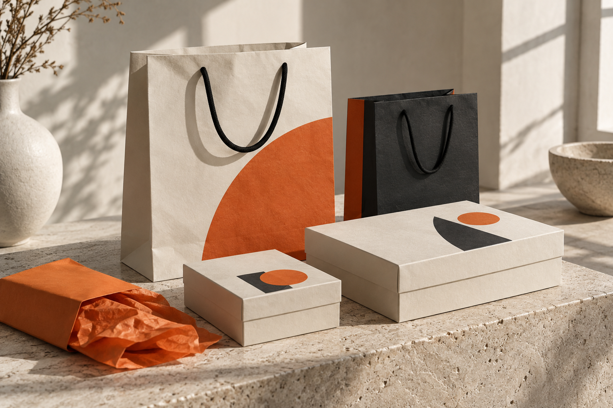
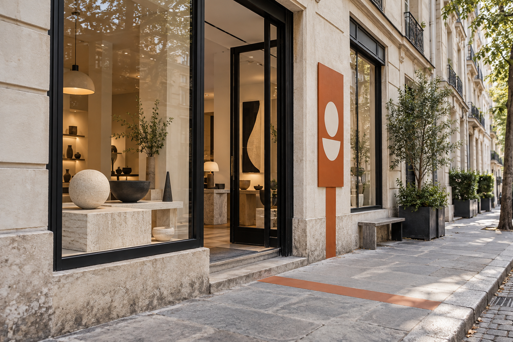

01
Дослідження та бриф
Знайомимося з бізнесом, продуктом і аудиторією. Визначаємо, що айдентика має передавати та де вона працюватиме.
Послуги / Айдентика
Створюємо візуальну систему бренду: виразну, гнучку та готову до щоденного використання.
Від логотипу, кольору й типографіки — до носіїв, правил і цілісного досвіду в кожній точці контакту.
Обговорити проєкт ↗
01 / ПІДХІД
02 / ПОСЛУГА
Кожен елемент виконує свою роль. Разом вони створюють образ, який легко адаптувати до різних форматів і задач бренду.

Знайомимося з бізнесом, продуктом і аудиторією. Визначаємо, що айдентика має передавати та де вона працюватиме.
Шукаємо образи, прийоми та референси, які підтримують характер бренду. Погоджуємо критерії майбутньої системи.

Розробляємо знак і написання бренду з урахуванням різних масштабів, фонів і сценаріїв використання.
Добираємо основні й додаткові кольори та їхні поєднання, щоб бренд залишався впізнаваним у різних середовищах.

Вибудовуємо ієрархію шрифтів для заголовків, текстів і цифрових інтерфейсів. Враховуємо потрібні мови та читабельність.
Створюємо принципи композиції, графічні елементи, патерни або ілюстративний підхід, який підтримує ідею бренду.

Показуємо, як система працює на сайті, в соцмережах, презентаціях, упаковці, документах або просторі.
Фіксуємо правила використання айдентики та передаємо файли, з якими команді зручно працювати після запуску.
03 / КОЛИ ЦЕ АКТУАЛЬНО
Новому бізнесу потрібен виразний і послідовний образ для першого контакту з аудиторією.
Поточний стиль уже не відображає продукт, масштаби компанії або її нове позиціонування.
Окрема лінійка чи сервіс потребує власної системи в межах існуючого бренду.
Матеріали створюються різними командами, а бренд має виглядати цілісно на кожному носії.
ОСНОВА ДЛЯ РІШЕНЬ
Система допомагає бренду залишатися собою на екрані, в упаковці, у просторі й в особистому контакті з клієнтом.
04 / ПРОЄКТИ
Кейси ZOND з різних категорій. Перегляньте сторінки проєктів, щоб побачити їхні задачі та реалізовані рішення.
05 / ЗВОРОТНИЙ ЗВ’ЯЗОК
Демонстраційні тексти для макета. Це не опубліковані відгуки клієнтів; перед публічним використанням замініть їх підтвердженими цитатами.
ПРИКЛАД ВІДГУКУ 01«Тепер усі матеріали виглядають частиною одного бренду — від сайту до презентації для партнерів».
ПРИКЛАД ВІДГУКУ 02«Гайдлайн допоміг швидко готувати нові носії та зберігати цілісність стилю в роботі різних команд».
ПРИКЛАД ВІДГУКУ 03«Ми отримали гнучку систему, яку можна застосовувати до нових продуктів без втрати впізнаваності».
ПРИКЛАД ВІДГУКУ 04«Після запуску айдентики стало простіше пояснювати дизайнерам, які рішення відповідають характеру бренду».
06 / ЗАСТОСУВАННЯ
Ілюстративні концепти показують роботу єдиної візуальної системи на упаковці, у просторі та ділових матеріалах. Це не клієнтські роботи.

07 / ПРОЦЕС
Обговорюємо продукт, бізнес-цілі, аудиторію й майбутні точки контакту.
Аналізуємо контекст категорії, конкурентів та наявні візуальні рішення бренду.
Формуємо візуальні принципи й погоджуємо напрям майбутньої айдентики.
Показуємо, як головна ідея переходить у логотип, колір, шрифт і композицію.
Розробляємо набір елементів і перевіряємо його на потрібних носіях.
Готуємо файли та правила використання для команди й підрядників.
08 / ДЕТАЛЬНІШЕ
Айдентика — це візуальна система, за якою бренд можна впізнати. До неї входять логотип, колір, типографіка, графічні елементи та принципи їх поєднання.
Вона працює тоді, коли елементи не існують окремо, а підтримують спільний характер на сайті, у пакуванні, рекламі та повсякденних матеріалах.
Логотип допомагає назвати бренд, але не визначає вигляд кожного повідомлення. Уявлення про бренд складається також із кольорів, шрифтів, зображень і композиції.
Зрозуміла система дає команді свободу створювати різні матеріали, зберігаючи впізнаваний стиль.
Послідовний образ допомагає бренду здаватися зрозумілим у різних каналах і скорочує час на погодження нових макетів.
Ми проєктуємо елементи з огляду на реальні задачі: формат носіїв, частоту публікацій і спосіб роботи внутрішньої команди.
Нові продукти, ринки й команди збільшують кількість точок контакту. Без спільних правил стиль швидко починає змінюватися від одного носія до іншого.
Гайдлайн фіксує базові принципи й приклади застосування, щоб бренд міг розвиватися без втрати характеру.
09 / РЕЗУЛЬТАТ
Візуальну концепцію та обґрунтування.
Логотип і потрібні версії для різних носіїв.
Систему основних і додаткових кольорів.
Типографічну ієрархію.
Графічні елементи й принципи композиції.
Приклади застосування на ключових носіях.
Файли для digital і друку в погоджених форматах.
Гайдлайн із правилами використання.
Основу для розвитку стилю в нових каналах.
Склад файлів і носіїв погоджуємо до початку роботи з урахуванням задач бренду.
10 / FAQ
Склад залежить від задачі. Зазвичай ми розробляємо логотип, систему кольорів, типографіку, графічні принципи, приклади носіїв і гайдлайн. Точний перелік фіксуємо до початку роботи.
Вартість залежить від обсягу системи та кількості потрібних носіїв. Після знайомства з проєктом ми запропонуємо склад робіт і кошторис.
Терміни залежать від задачі, кількості концептуальних напрямів та обсягу носіїв. Етапи й графік погоджуємо перед стартом.
Айдентика — візуальна частина бренду. Брендинг охоплює також стратегію, позиціонування, назву, комунікацію та досвід взаємодії з брендом.
Так. Ми можемо визначити обсяг роботи відповідно до поточних потреб, хоча для послідовного використання логотипу зазвичай потрібні хоча б базові правила кольору й типографіки.
Так. Ми оцінюємо, які елементи вже працюють, що варто зберегти, а що змінити, і пропонуємо обсяг оновлення.
Так, перелік потрібних форматів узгоджуємо на початку проєкту. Після завершення передаємо файли та правила їх використання.
ВІД ІДЕЇ — ДО СИСТЕМИ
Розкажіть про бренд та майбутні задачі. Ми запропонуємо формат розробки айдентики.
Обговорити проєкт ↗